准备工作
smalidea支持14.1及以上版本的IDEA，Android Studio若是基于14.1或以上版本的IDEA也是支持的。我这里用的是最新版本的IDEA，Android Studio的操作也与之类似。
点击下载这三个文件。
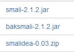
安装smalidea
1.打开IDEA，进入设置界面，点击Plugins——Install plugin from disk…——选择下载好的smalidea-0.03.zip。
2.重启IDEA。
baksmali
使用baksmali反编译apk得到smali代码。
使用下面命令得到apk的smali代码，在./projects/myapp/src目录下java -jar baksmali-2.1.2.jar myapp.apk -o ./projects/myapp/src。
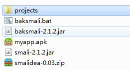
创建新的工程并导入smali
1.Project from Existing Sources…
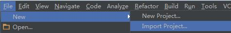
选择工程目录
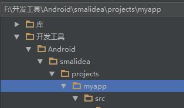
接着一路Next…
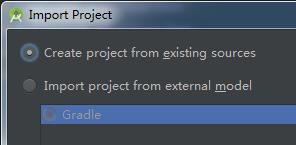
2.工程创建成功后，在src目录上右键并选择”Mark Directory As——Sources Root”。
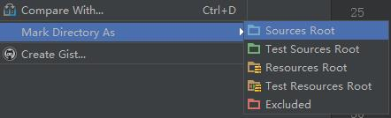
开始调试app
1.打开DDMS
工程创建成功后，发现Android Device Monitor按钮不能点击，因为这不是一个完整的安卓工程，不过可以到Android SDK/tools目录下点击monitor.bat打开DDMS。
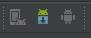
2.Run/Debug Configurations
创建一个”Remote” debug configuration (Run->Edit Configurations), 设置Port为8700。
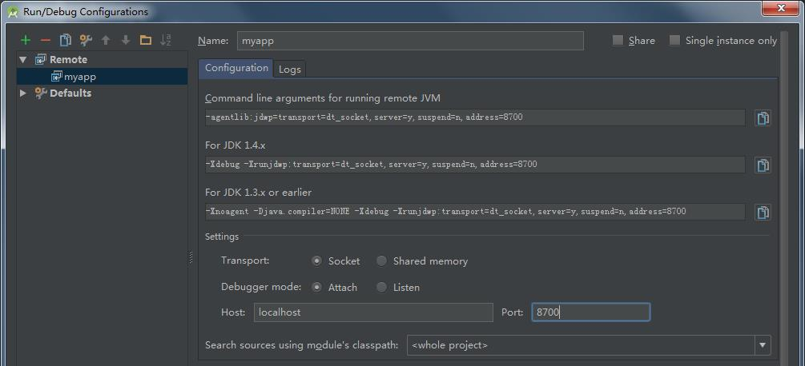
3.在smali代码中需要的地方打上断点。
4.运行应用，并在DDMS中选中该应用的进程。
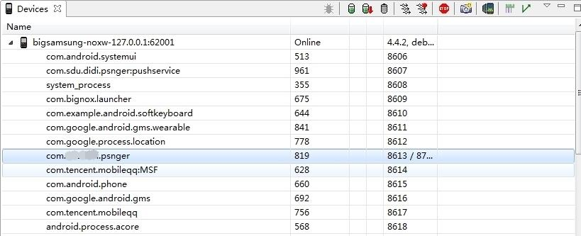
5.点击Debug按钮，开始调试。当运行到断点时应用就会被暂停，这时就可以像平时调试应用一样操作。
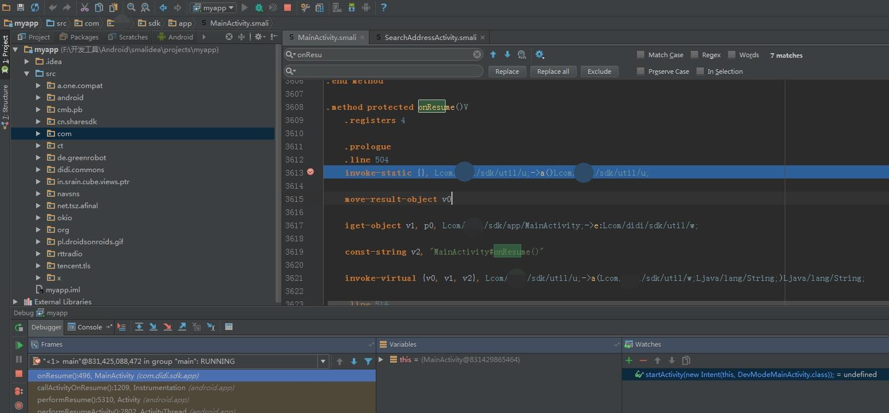
使用心得
这里分享下我在使用期间的几点心得：
1.在smali中所有的局部变量用v开头，方法顶部的.locals n表示这个方法使用n个局部变量。所有的参数用p开头，局部变量和参数都是从0开始编号。对于非静态方法来说，p0就是对象本身的引用，即this指针。
2.在通过smali进行动态调试的过程中，对照JEB中的Java源码进行分析，能够更清楚地知道程序的执行流程。
3.当”单步步入/单步步过“无法跳转到目标行、隔行跳转或无法查看变量和寄存器值时，使用“强制步入”进行调试（下图中红色的步入按键）。
4.动态调试运行到断点A崩溃的解决方法：（1）把断点A取消，在其上面几行的smali处下断，然后单步执行到A处；（2）重装应用后进行调试。
5.各按键作用的查看方法如下，Run to Cursor是程序跳转到“当前光标所在行”。
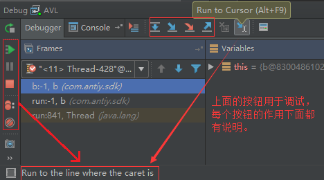
6.一般情况下，程序会开启多线程运行，执行断点时要考虑到断点可能在不同的线程中。
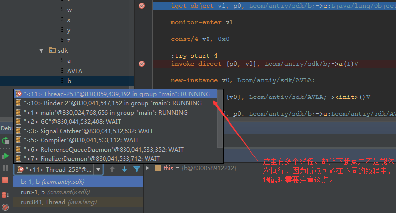